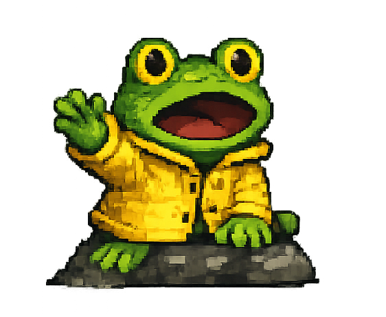

📱
Draai je toestel liggend voor de beste speelervaring!
Toch verder spelen

KIKKER
"HELP!! Sinds jou laatste vertrek is er chaos op Sao Miguel. De heilige dam is gebroken en het eiland dreigt elk moment onder te lopen. Kun jij ons redden?"
Verder ▶
TIK op het scherm om te springen